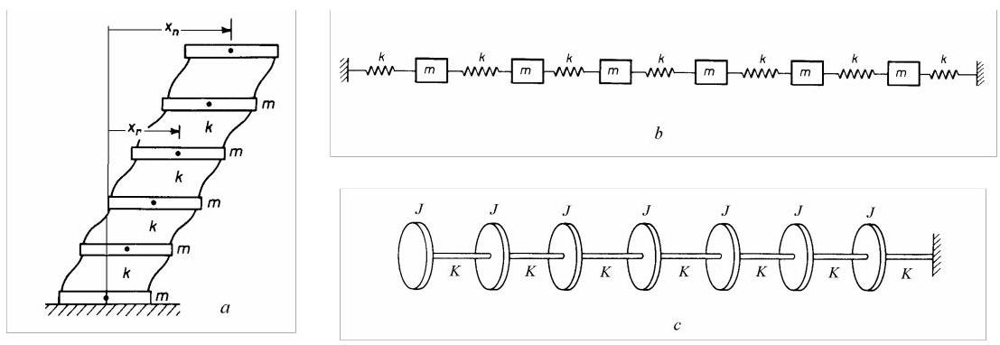
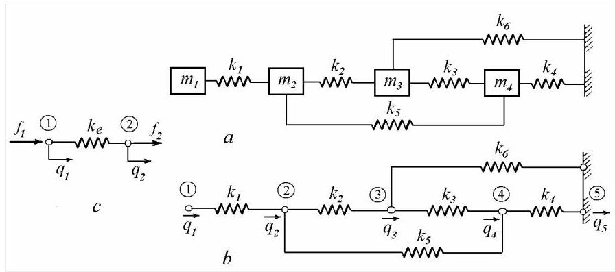
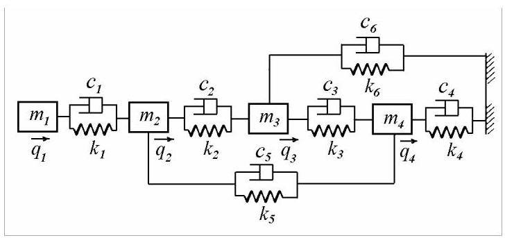
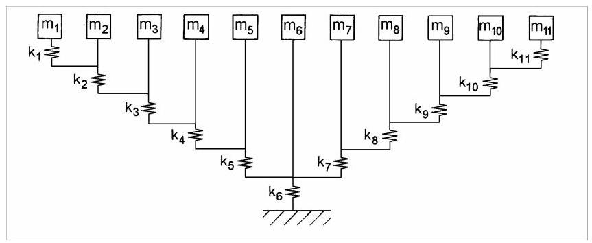
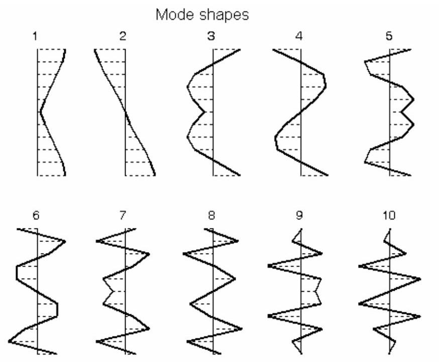
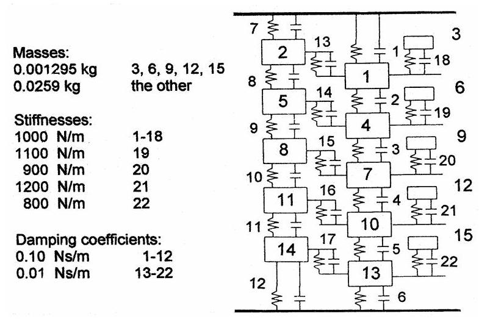
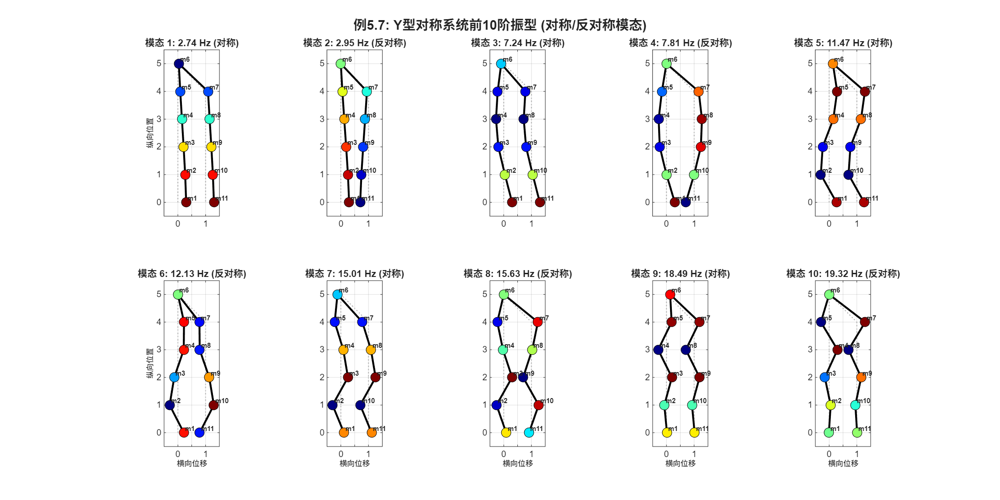

第24篇
5.1.4 重复结构
振动系统常由若干相同区段重复多次组成。图5.12给出了重复结构的示例:\(n\)层剪切型建筑、\(n\)质量平移系统以及\(n\)盘扭转系统。对于此类系统，差分方程法适用于计算其固有频率。

图5.12
第\(r\)个质量块(图5.12, a)的运动方程为
对于简谐运动\({x}_{r} = {a}_{r}\sin {\omega t}\)，可用振幅表示为
通过代入法求解该方程
从而得到如下关系
也可写作
\({a}_{r}\)的通解为
其中\({C}_{1}\)和\({C}_{2}\)由边界条件确定。在\(r = 0\)处，振幅为零\({a}_{0} = 0\)，因此\({C}_{1} = 0\)。在自由端\(r = n\)，运动方程为
在振幅方面，则变为
代入通解后，我们得到用于计算\(\beta\)的如下关系式:
该结果可化简为乘积形式
满足
并且通过
固有频率(natural frequencies)即可由式(5.18)求得
导出
用差分方程法计算得到的固有频率始终由方程(5.19)给出。然而，对于每一个重复结构，量\(\beta\)必须根据相应的边界条件确定。
5.1.5 多质量-弹簧-阻尼器系统(Multi-Mass-Spring-Dashpot Systems)
在一维振动系统(one-dimensional vibrating system)中，每个质量块仅沿一个方向运动。在每个集中质量(lumped mass)处设置一个节点(node)，每个节点仅有一个自由度(degree of freedom)。在固定边界处设置一个被约束的节点(blocked node)。

图5.13
图5.13所示的四质量模型(four-mass model)具有四个自由度(degrees of freedom)和五个节点(nodes)。节点位移记为\({q}_{1},{q}_{2},\ldots ,{q}_{5}\)(图5.13, b)。列向量\(\{ \bar{Q}\} = {\left\{ {q}_{1},{q}_{2},\ldots ,{q}_{5}\right\} }^{T}\)称为全局节点位移向量(global vector of nodal displacements)，\(\{ \bar{F}\} = {\left\{ {f}_{1},{f}_{2},\ldots ,{f}_{5}\right\} }^{T}\)为全局节点力向量(global vector of nodal forces)。若位移或力沿正\(q\)方向作用，则取正值。此时，边界条件\({q}_{5} = 0\)尚未施加。
表5.1
| Element | Node 1 | Node 2 |
|---|---|---|
| 1 | 1 | 2 |
| 2 | 2 | 3 |
| 3 | 3 | 4 |
| 4 | 4 | 5 |
| 5 | 2 | 4 |
| 6 | 3 | 5 |
六个弹簧按索引编号。每个弹簧有两个节点。单元连接信息可如表5.1所示方便表示。在连接表中，局部节点编号为1和2，而全局节点编号为\(i\)和\(j\)。该表建立了局部与全局的对应关系。
参照图5.13，\(c\)，局部节点力向量\(\left\{ {f}^{e}\right\} = {\left\{ {f}_{1},{f}_{2}\right\} }^{T}\)与局部节点位移向量\(\left\{ {q}^{e}\right\} = {\left\{ {q}_{1},{q}_{2}\right\} }^{T}\)的关系由方程\(\left\{ {f}^{e}\right\} = \left\lbrack {k}^{e}\right\rbrack \left\{ {q}^{e}\right\}\)给出，其中单元刚度矩阵为
这可由平衡方程和力-变形方程建立:对\({q}_{2} = 0,{f}_{1} = - {f}_{2} = k{q}_{1}\)，以及对\({q}_{1} = 0,{f}_{1} = - {f}_{2} = - k{q}_{2}\)。
另一方面，全局节点力向量\(\{ \bar{F}\}\)与全局位移向量\(\{ \bar{Q}\}\)的关系由方程\(\{ \bar{F}\} = \left\lbrack \bar{K}\right\rbrack \{ \bar{Q}\}\)给出，其中\(\left\lbrack \bar{K}\right\rbrack\)为未缩减的全局刚度矩阵(unreduced global stiffness matrix)。
矩阵\(\left\lbrack \bar{K}\right\rbrack\)可通过直接刚度法(direct stiffness approach)获得。利用单元连接信息，将各单元矩阵\(\left\lbrack {k}^{e}\right\rbrack\)的项置于更大矩阵\(\left\lbrack \bar{K}\right\rbrack\)的相应位置，然后对重叠元素求和。
全局刚度矩阵的组装可通过单元应变能(strain energies)的求和来解释。
例如，弹簧3的应变能为
将刚度矩阵扩展至系统规模，我们得到
其中\(\left\lbrack {\widetilde{k}}^{3}\right\rbrack\)为弹簧3的扩展刚度矩阵(expanded stiffness matrix)。
我们看到，矩阵\(\left\lbrack {\widetilde{k}}^{3}\right\rbrack\)的元素位于\(\left\lbrack \bar{K}\right\rbrack\)矩阵的第三、四行与列。当叠加弹簧应变能时
根据弹簧连接关系，\(\left\lbrack {k}^{e}\right\rbrack\)的元素被置于全局\(\left\lbrack \bar{K}\right\rbrack\)矩阵的相应位置，重叠元素直接相加，因此
对于图5.13所示系统，\(a\)，未缩减的全局刚度矩阵为
现在必须指定边界条件。节点5被固定，因此\({q}_{5} = 0\)应从位移向量中消除。通过从原始刚度矩阵中删除与指定或“支撑”自由度对应的行和列，得到缩减后的整体刚度矩阵。
对于图5.13所示的系统，\(a\)缩减后的整体刚度矩阵为
与对角质量矩阵一起
用于写出自由运动方程
并求解相应的特征值问题
以确定无阻尼系统的真实振型。
对于包含阻尼器的系统，采用相同的方法组装整体阻尼矩阵\(\left\lbrack C\right\rbrack\)。对于图5.14所示的模型，阻尼器与弹簧采用了相同的连接方式，尽管一般情况下它们可以不同。

图5.14
整体阻尼矩阵为
此时可写出阻尼系统的自由运动方程
在这种情况下，系统具有复振型。复特征值给出阻尼固有频率和模态阻尼比。具有比例阻尼的系统具有实模态向量。阻尼系统的振动将在第4.6.2节讨论，并在下一章进一步处理。
例5.7
计算图5.15所示系统的固有频率和振型。系统参数为:\({m}_{1} = {m}_{2} = \ldots = {m}_{11} = 1\mathrm{\;{kg}},{k}_{1} = {k}_{11} = {2421}\mathrm{\;N}/\mathrm{m}\)，\({k}_{2} = {k}_{10} = {2989}\mathrm{\;N}/\mathrm{m},{k}_{3} = {k}_{9} = {3691}\mathrm{\;N}/\mathrm{m},{k}_{4} = {k}_{8} = {4556}\mathrm{\;N}/\mathrm{m},{k}_{5} = {k}_{7} = {5625}\mathrm{\;N}/\mathrm{m}\)，\({k}_{6} = {18000}\mathrm{\;N}/\mathrm{m}\)。
解:固有频率(单位:Hz)为2.74、2.95、7.24、7.80、11.47、12.13、15.00、15.62、18.49、19.32和28.57。存在成对的接近固有频率，一个对应于对称模态，另一个对应于反对称模态，这是对称结构的典型特征。

图5.15
前10阶振型如图5.16所示。

图5.16
例5.8
对图5.17所示的15自由度系统，建立矩阵\(M, K\)和\(C\)，求阻尼固有频率和模态阻尼比。

图5.17
解:使用程序得到的值列于表5.2，阻尼比值已乘以100。
表5.2
| Mode | \(\omega_d\), Hz | \(\zeta\), % | Mode | \(\omega_d\), Hz | \(\zeta\), % |
|---|---|---|---|---|---|
| 1 | 15.98 | 0.502 | 9 | 68.88 | 1.378 |
| 2 | 30.86 | 0.968 | 10 | 73.72 | 1.579 |
| 3 | 43.60 | 1.364 | 11 | 128.87 | 0.536 |
| 4 | 46.47 | 0.301 | 12 | 136.59 | 0.506 |
| 5 | 53.35 | 1.665 | 13 | 143.89 | 0.477 |
| 6 | 53.42 | 0.670 | 14 | 150.87 | 0.457 |
| 7 | 59.45 | 1.853 | 15 | 157.52 | 0.437 |
| 8 | 61.62 | 1.060 |
右侧的五个质量比其他质量小一个数量级，这导致出现五个较高的固有频率簇。由于阻尼值相对较低，阻尼固有频率近似等于无阻尼固有频率。
Matlab Demo
修订下面给出例题5.7的Demo，与原文不同的是，使用的模态对折显示，容易理解。

clc; clear; close all;
% All masses are 1 kg
n = 11; % Number of masses
M = eye(n);
% Define stiffness values (N/m) - 按照例5.7给定参数
k1 = 2421; % 连接m1-m2
k2 = 2989; % 连接m2-m3
k3 = 3691; % 连接m3-m4
k4 = 4556; % 连接m4-m5
k5 = 5625; % 连接m5-m6(左臂到中心)
k6 = 18000; % 连接m6到地面(中心弹簧)
k7 = 5625; % 连接m6-m7(中心到右臂)
k8 = 4556; % 连接m7-m8
k9 = 3691; % 连接m8-m9
k10 = 2989; % 连接m9-m10
k11 = 2421; % 连接m10-m11
% --- Step 2 Assemble the Stiffness Matrix [K] ---
K = zeros(n, n);
% 左臂 (m1-m5): 自由端串联质量-弹簧链
% m1: 自由端，只连接到m2通过k1
K(1,1) = k1;
K(1,2) = -k1;
% m2: 连接到m1通过k1，到m3通过k2
K(2,2) = k1 + k2;
K(2,1) = -k1;
K(2,3) = -k2;
% m3: 连接到m2通过k2，到m4通过k3
K(3,3) = k2 + k3;
K(3,2) = -k2;
K(3,4) = -k3;
% m4: 连接到m3通过k3，到m5通过k4
K(4,4) = k3 + k4;
K(4,3) = -k3;
K(4,5) = -k4;
% m5: 连接到m4通过k4，到m6通过k5
K(5,5) = k4 + k5;
K(5,4) = -k4;
K(5,6) = -k5;
% 中心质量 m6: 连接到地面通过k6，到m5通过k5，到m7通过k7
K(6,6) = k5 + k6 + k7;
K(6,5) = -k5;
K(6,7) = -k7;
% 右臂 (m7-m11): 对称结构
% m7: 连接到m6通过k7，到m8通过k8
K(7,7) = k7 + k8;
K(7,6) = -k7;
K(7,8) = -k8;
% m8: 连接到m7通过k8，到m9通过k9
K(8,8) = k8 + k9;
K(8,7) = -k8;
K(8,9) = -k9;
% m9: 连接到m8通过k9，到m10通过k10
K(9,9) = k9 + k10;
K(9,8) = -k9;
K(9,10) = -k10;
% m10: 连接到m9通过k10，到m11通过k11
K(10,10) = k10 + k11;
K(10,9) = -k10;
K(10,11) = -k11;
% m11: 自由端，只连接到m10通过k11
K(11,11) = k11;
K(11,10) = -k11;
% --- Step 2.5: Visualize System Matrix (Optional) ---
% Display stiffness matrix structure
fprintf('刚度矩阵组装完成 (11x11):\n');
fprintf(' 对角线元素: 各质量点的总刚度\n');
fprintf(' 非对角元素: 相邻质量点之间的耦合刚度\n');
fprintf(' 矩阵对称性: K = K^T (系统保守性)\n\n');
% Plot sparsity pattern of stiffness matrix
figure('Name', '刚度矩阵稀疏模式', 'Position', [100, 100, 600, 600]);
spy(K, 'k', 10);
title('刚度矩阵K的稀疏模式 (非零元素分布)', 'FontSize', 12, 'FontWeight', 'bold');
xlabel('列索引 (质量块编号)', 'FontSize', 10);
ylabel('行索引 (质量块编号)', 'FontSize', 10);
grid on;
set(gca, 'FontSize', 10);
% Add text annotation
annotation('textbox', [0.15, 0.02, 0.7, 0.05], ...
'String', 'Y型结构的三对角带状模式，中心质量(6)连接左右两臂', ...
'HorizontalAlignment', 'center', 'FontSize', 9, ...
'EdgeColor', 'none');
% --- Step 3: Solve the Eigenvalue Problem ---
[V, D] = eig(K, M);
% Extract and sort the results
eigenvalues = diag(D);
[sorted_eigenvalues, sort_idx] = sort(eigenvalues);
sorted_modes = V(:, sort_idx);
% Calculate natural frequencies in rad/s and Hz
omega_rad_s = sqrt(sorted_eigenvalues);
omega_hz = omega_rad_s / (2*pi);
% --- Step 4: Display Results and Compare with Expected Values ---
fprintf('%s\n', repmat('=', 1, 70));
fprintf('例5.7: 11自由度对称Y型系统固有频率计算\n');
fprintf('%s\n\n', repmat('=', 1, 70));
% Expected frequencies from the textbook (Hz)
expected_freq = [2.74, 2.95, 7.24, 7.80, 11.47, 12.13, 15.00, 15.62, 18.49, 19.32, 28.57];
fprintf('模态 | 计算频率(Hz) | 教材频率(Hz) | 误差(%%)\n');
fprintf('-----|-------------|-------------|----------\n');
for i = 1:n
error_percent = abs(omega_hz(i) - expected_freq(i)) / expected_freq(i) * 100;
fprintf('%4d | %11.2f | %11.2f | %8.2f\n', i, omega_hz(i), expected_freq(i), error_percent);
end
fprintf('\n');
% Check if results match expected values (within 1% tolerance)
max_error = max(abs(omega_hz' - expected_freq) ./ expected_freq * 100);
if max_error < 1.0
fprintf('结论: 计算结果与教材匹配良好 (最大误差: %.2f%%)\n', max_error);
else
fprintf('警告: 计算结果与教材存在偏差 (最大误差: %.2f%%)\n', max_error);
fprintf(' 请检查系统模型是否正确\n');
end
fprintf('\n');
% 对称性分析
fprintf('对称性分析:\n');
fprintf(' 成对的接近固有频率表明系统具有对称/反对称模态特性\n');
fprintf(' - 模态对1-2 (%.2f, %.2f Hz): 低频模态对\n', omega_hz(1), omega_hz(2));
fprintf(' - 模态对3-4 (%.2f, %.2f Hz): 次低频模态对\n', omega_hz(3), omega_hz(4));
fprintf(' - 模态对5-6 (%.2f, %.2f Hz): 中频模态对\n', omega_hz(5), omega_hz(6));
fprintf(' - 模态对7-8 (%.2f, %.2f Hz): 次高频模态对\n', omega_hz(7), omega_hz(8));
fprintf(' - 模态对9-10 (%.2f, %.2f Hz): 高频模态对\n', omega_hz(9), omega_hz(10));
fprintf(' - 模态11 (%.2f Hz): 中心质量主导的最高频模态\n', omega_hz(11));
fprintf('\n');
% --- Step 5: Plot Mode Shapes (Y-型结构可视化) ---
figure('Name', '例5.7: 前10阶振型', 'Position', [50, 50, 1400, 700]);
% 定义Y型结构的节点位置
% 左臂: m1(0,0) -> m2(0,1) -> m3(0,2) -> m4(0,3) -> m5(0,4)
% 中心: m6(0,5)
% 右臂: m7(1,4) -> m8(1,3) -> m9(1,2) -> m10(1,1) -> m11(1,0)
x_pos = [0, 0, 0, 0, 0, 0, 1, 1, 1, 1, 1]; % x坐标
y_pos = [0, 1, 2, 3, 4, 5, 4, 3, 2, 1, 0]; % y坐标
% 连接关系（用于绘制结构线）
connections = [1,2; 2,3; 3,4; 4,5; 5,6; 6,7; 7,8; 8,9; 9,10; 10,11];
% 绘制前10阶振型
for mode_idx = 1:10
subplot(2, 5, mode_idx);
hold on;
% 获取当前模态向量并归一化
current_mode = sorted_modes(:, mode_idx);
current_mode = current_mode / max(abs(current_mode)); % 归一化到[-1, 1]
% 计算变形后的位置（放大系数用于可视化）
scale = 0.3;
x_deformed = x_pos + scale * current_mode';
y_deformed = y_pos;
% 绘制未变形结构（虚线）
for i = 1:size(connections, 1)
n1 = connections(i,1);
n2 = connections(i,2);
plot([x_pos(n1), x_pos(n2)], [y_pos(n1), y_pos(n2)], ...
':', 'Color', [0.7 0.7 0.7], 'LineWidth', 1);
end
% 绘制变形后的结构（实线，根据振幅着色）
for i = 1:size(connections, 1)
n1 = connections(i,1);
n2 = connections(i,2);
plot([x_deformed(n1), x_deformed(n2)], [y_deformed(n1), y_deformed(n2)], ...
'-k', 'LineWidth', 2);
end
% 绘制质量点（根据振幅着色）
scatter(x_deformed, y_deformed, 100, current_mode, 'filled', 'MarkerEdgeColor', 'k');
colormap(jet);
% 添加质量编号
for i = 1:n
text(x_deformed(i)+0.05, y_deformed(i)+0.15, sprintf('m%d', i), ...
'FontSize', 7, 'FontWeight', 'bold');
end
% 设置坐标轴
axis equal;
xlim([-0.5, 1.5]);
ylim([-0.5, 5.5]);
set(gca, 'YDir', 'normal');
% 判断对称性 (基于左右臂振幅的相关性)
left_arm = current_mode(1:5);
right_arm = current_mode(11:-1:7); % 反转右臂顺序以对比对称性
symmetry_corr = corr(left_arm, right_arm);
if symmetry_corr > 0.9
mode_type = '对称';
elseif symmetry_corr < -0.9
mode_type = '反对称';
else
mode_type = '混合';
end
% 标题
title(sprintf('模态 %d: %.2f Hz (%s)', mode_idx, omega_hz(mode_idx), mode_type), ...
'FontSize', 10, 'FontWeight', 'bold');
% 添加网格
grid on;
box on;
% 只在特定子图显示坐标轴标签
if mode_idx > 5
xlabel('横向位移', 'FontSize', 8);
end
if mod(mode_idx-1, 5) == 0
ylabel('纵向位置', 'FontSize', 8);
end
hold off;
end
% 总标题
sgtitle('例5.7: Y型对称系统前10阶振型 (对称/反对称模态)', ...
'FontSize', 14, 'FontWeight', 'bold');